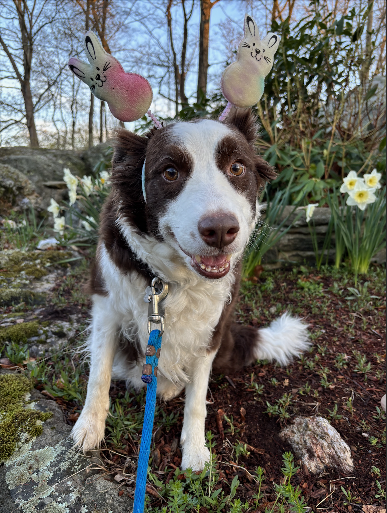
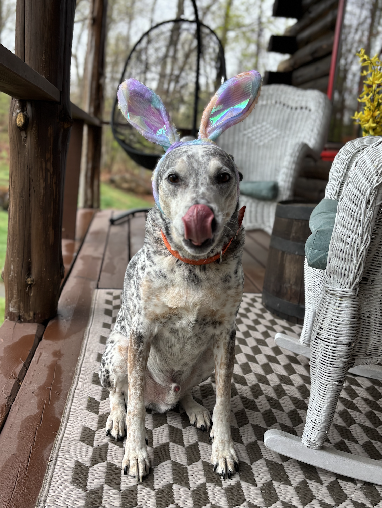
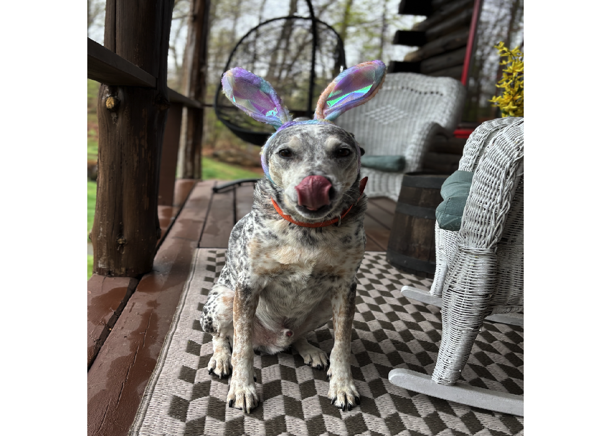
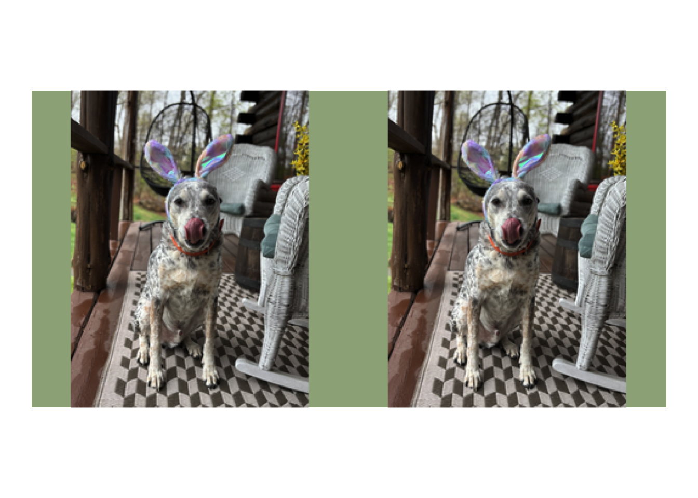
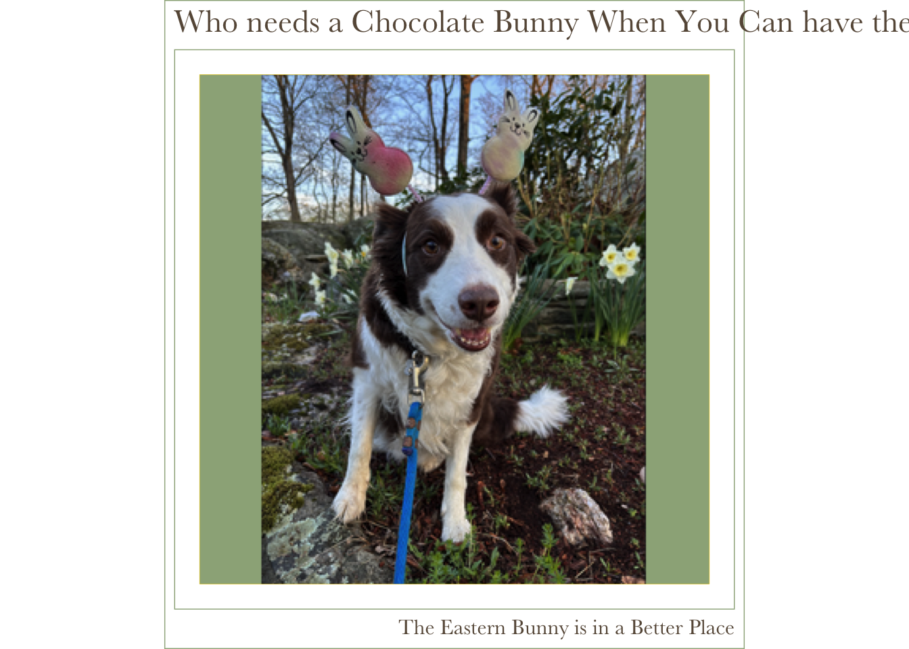
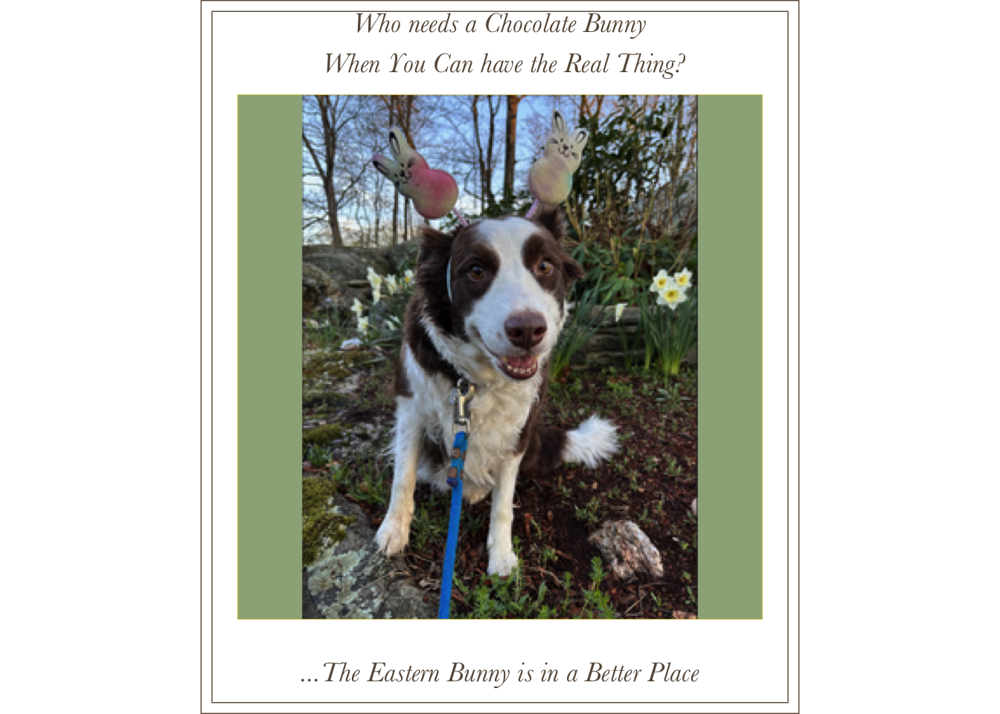
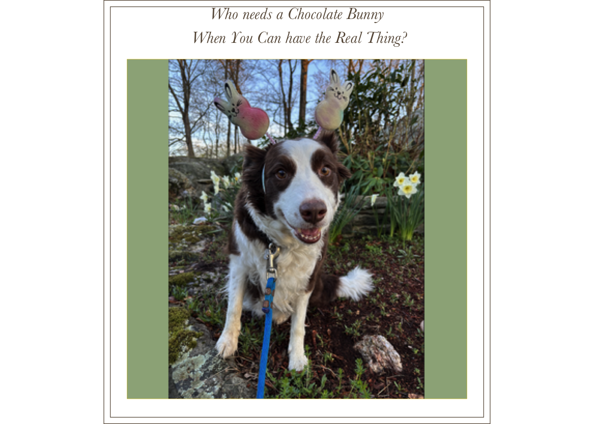
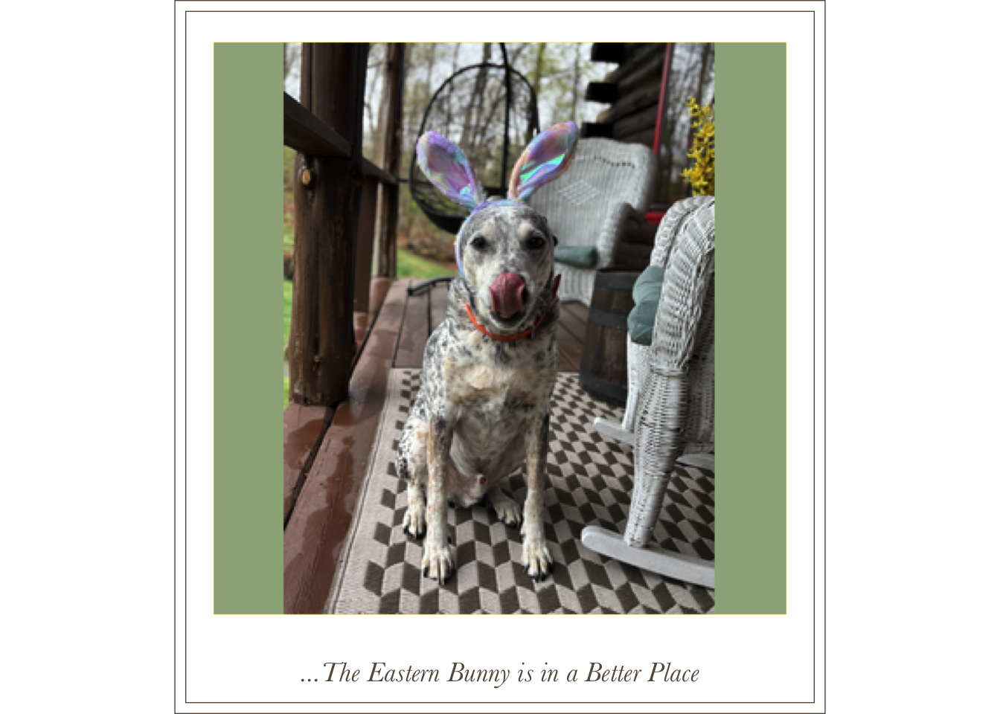

For inspo, I looked at a few differnt things:
https://albert-rapp.de/posts/ggplot2-tips/27_images/27_images
This one helped me with how to incorporate pictures as a pattern layered onto ggplot()
https://medium.com/@arpita_deb/r-you-ready-for-christmas-6a4191a412c1
This is a christmas card tutorial in R, which also had some helpful tricks






v21 <- tibble(id = 1:1, row = id %% 1, col = id %/% 1) %>%
ggplot(aes(x = col, y = row)) +
geom_tile_pattern(
fill = '#9CAF88',
col = 'gold',
linewidth = .1,
pattern = 'image',
pattern_filename = 'Wookie.png'
) +
coord_equal() +
# labs(
# title = 'Who needs a Chocolate Bunny When You Can have the Real Thing?',
# caption = 'The Eastern Bunny is in a Better Place'
# ) +
theme_minimal() +
theme(text = element_text(family = "Baskerville", color = "#675746", size = 15),
# subtitle.text = element_text(family = "Baskerville", color = "#675746", size = 15),
axis.text.x = element_blank(),
axis.title.x = element_blank(),
axis.text.y = element_blank(),
axis.title.y = element_blank(),
panel.grid.major= element_blank(),
panel.grid.minor = element_blank(), #,
# plot.title.position =
# plot.caption.position =
plot.background = element_rect(color = "#675746"),
panel.background = element_rect(color = "#675746"))
v21 <- v21 +
annotate(
geom = "text", # adding text to our plot using the annotate() function and the "text" geometry
x = 1, y = .6, # x and y coordinates for the location of the text
label = "Who needs a Chocolate Bunny\n When You Can have the Real Thing?", # the text as label, \n is used to break the text
colour = "#675746", # color of the text
family = "Baskerville", # font family
fontface = "italic", size = 5
# face = "bold" ,
)
v3 <- tibble(id = 1:1, row = id %% 1, col = id %/% 1) %>%
ggplot(aes(x = col, y = row)) +
geom_tile_pattern(
fill = '#9CAF88',
col = 'gold',
linewidth = .1,
pattern = 'image',
pattern_filename = 'newlou.png'
) +
coord_equal() +
# labs(
# title = 'Who needs a Chocolate Bunny When You Can have the Real Thing?',
# caption = 'The Eastern Bunny is in a Better Place'
# ) +
theme_minimal() +
theme(text = element_text(family = "Baskerville", color = "#675746", size = 15),
# subtitle.text = element_text(family = "Baskerville", color = "#675746", size = 15),
axis.text.x = element_blank(),
axis.title.x = element_blank(),
axis.text.y = element_blank(),
axis.title.y = element_blank(),
panel.grid.major= element_blank(),
panel.grid.minor = element_blank(), #,
# plot.title.position =
# plot.caption.position =
plot.background = element_rect(color = "#675746"),
panel.background = element_rect(color = "#675746"))
v3 <- v3 + annotate(
geom = "text", # adding text to our plot using the annotate() function and the "text" geometry
x = 1, y = -.6, # x and y coordinates for the location of the text
label = "...The Eastern Bunny is in a Better Place", # the text as label, \n is used to break the text
colour = "#675746", # color of the text
family = "Baskerville", # font family
fontface = "italic", size = 5
# face = "bold" ,
) 
